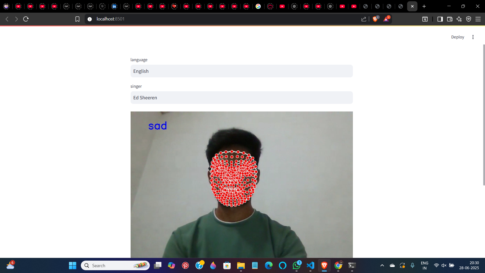
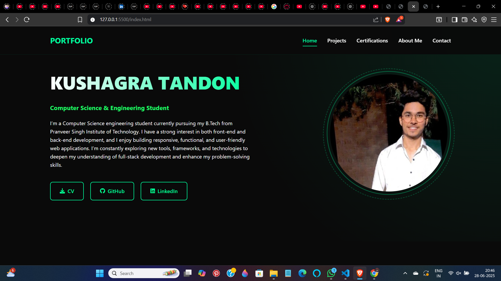

PORTFOLIO
Home
Projects
Certifications
About Me
Contact
My Projects
EMOFI

GitHub
Utilized Python libraries including OpenCV, cv2, Streamlit, Mediapipe, NumPy, Matplotlib, and Keras for emotion detection and music recommendation.
I developed a music recommendation system that uses face recognition to detect human emotions in real time. By leveraging Python libraries such as OpenCV, cv2, Streamlit, Mediapipe, NumPy, Matplotlib, and Keras, the system accurately identifies emotional states through facial expressions. Based on the detected emotion, it integrates with the YouTube API to automatically fetch and recommend suitable songs, offering a personalized and mood-based music experience.
August 2023 - July 2024
My Portfolio

GitHub
HTML, CSS, JavaScript, Font Awesome, Bootstrap, Animate On Scroll, GithubPages
I developed a personal portfolio website using HTML, CSS, and JavaScript to showcase my projects, skills, and academic background. The website features a clean, responsive design with interactive elements to ensure a smooth user experience across devices. It serves as a central platform to highlight my work in web development and allows visitors to explore my technical journey, making it easier for recruiters and collaborators to connect with me.
September 2024 - January 2025
CRYPTOVAULT
GitHub
AES-256, Blockchain, React Native
Cryptovault is a secure messaging app built for military personnel, combining AES-256 encryption and blockchain technology to ensure end-to-end message security and tamper-proof metadata tracking. It safeguards sensitive communications from interception and unauthorized changes, providing a reliable and confidential platform. Designed with user-friendly features like group messaging and real-time updates, Cryptovault meets the high security and usability standards required for military operations.
April 2025 - Present